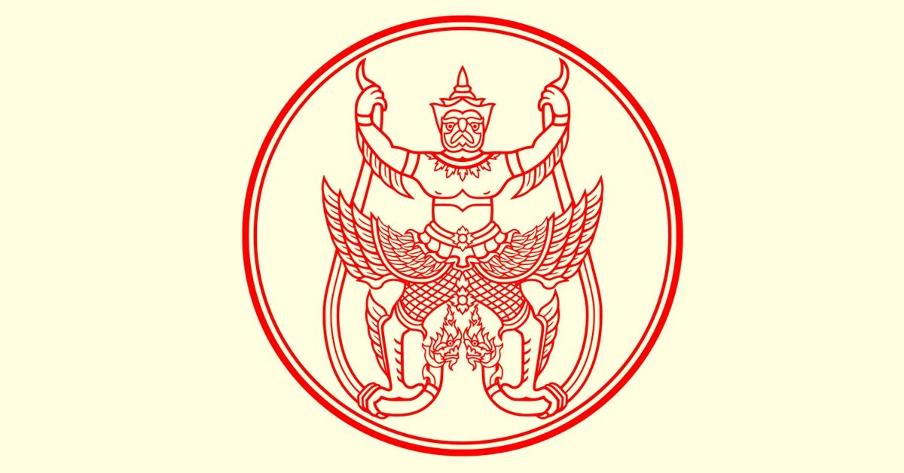

ประวัติศาสตร์ไทย สมัยราชวงศ์จักรี
รัชกาลที่ 2

พระราชประวัติ
พระบาทสมเด็จพระพุทธเลิศหล้านภาลัย ทรงเป็นพระมหากษัตริย์ไทยองค์ที่ 2 แห่งราชวงศ์จักรี ทรงประสูติเมื่อ 24 กุมภาพันธ์ พ.ศ. 2310 ตรงกับวันพุธ ขึ้น 7 คํ่า เดือน 3 ปีกุน มีพระนามเดิมว่า "ฉิม" พระองค์ทรงเป็นพระบรมราชโอรสองค์ที่ 4 ในพระบาทสมเด็จพระพุทธยอดฟ้าจุฬาโลกมหาราชและกรมสมเด็จพระอมรินทรามาตย์พระบรมราชชนนีพันปีหลวง ประสูติ ณ บ้านอัมพวา แขวงเมืองสมุทรสงคราม ขณะนั้นพระบาทสมเด็จพระพุทธยอดฟ้าจุฬาโลกมหาราช เป็นหลวงยกกรับัตรเมืองราชบุรี พระบิดาได้ให้เข้าศึกษากับสมเด็จพระวันรัต ( ทองอยู่ ) ณ วัดบางหว้าใหญ่ พระองค์ทรงมีพระชายาเท่าที่ปรากฎ
1. กรมสมเด็จพระศรีสุริเยนทรามาตย์ พระอัครมเหสี
2. กรมสมเด็จพระศรีสุราลัย พระสนมเอก ขณะขึ้นครองราชย์ในปี พ.ศ. 2352 มีพระชนมายุได้ 42 พรรษา
พระราชกรณียกิจที่สําคัญ
พ.ศ. 2317 ขณะที่เพิ่งมีพระชนมายุได้ 8 พรรษา ได้ติดตามไปสงครามเชียงใหม่ อยู่ในเหตุการณ์ครั้งที่บิดามีราชการไปปราบปรามเมืองนางรอง นครจําปาศักดิ์ และบางแก้ว ราชบุรี จนถึงอายุ 11 พรรษา
พ.ศ. 2322 พระราชบิดาไปราชการสงครามกรุงศรีสัตนาคนหุต ก็ติดตามไป
พ.ศ. 2323 พระชนมายุ 13 พรรษา ได้เข้าเป็นศิษย์สมเด็จพระวันรัต (ทองอยู่ )
พ.ศ. 2324 พระราชบิดาได้เลื่อนเป็นสมเด็จเจ้าพระยามหากษัตริย์ศึกฯ ไปร่วมปราบปรามเขมรกับพระบิดา
พ.ศ. 2325 พระบาทสมเด็จพระพุทธยอดฟ้าจุฬาโลก ได้ปราบดาภิเษกแล้วได้ทรงสถาปนาขึ้นเป็น "สมเด็จพระเจ้าลูกยาเธอเจ้าฟ้ากรมหลวงอิศรสุนทร"
พ.ศ. 2329 พระชนมายุ 19 พรรษา ได้โดยเสด็จสมเด็จพระบรมชนกนาถ ไปสงครามตําบลลาดหญ้า และทางหัวเมืองฝ่ายเหนือ
พ.ศ. 2330 ได้โดยเสด็จพระบรมชนกนาถ ไปสงครามที่ตําบลท่าดินแดง และตีเมืองทวาย
พ.ศ. 2331 ทรงผนวชเป็นพระภิกษุในพระอุโบสถวัดพระศรีรัตนศาสดาราม ซึ่งเป็นพระองค์แรกที่อุปสมบทในวัดนี้ เสด็จไปจําพรรษา เมื่อครบสามเดือน ณ วัดสมอราย ปัจจุบันคือวัดราชาธิราช ครั้นทรงลาผนวชในปีนั้น ทรงอภิเษกสมรสกับสมเด็จเจ้าหญิงบุญรอด พระธิดาในพระพี่นางเธอ สมเด็จเจ้าฟ้าหญิงกรมพระศรีสุดารักษ์
พ.ศ. 2336 โดยเสด็จพระราชบิดาไปตีเมืองทวาย ครั้งที่ 2
พ.ศ. 2349 ( วันอาทิตย์ เดือน 8 ขึ้น 7 คํ่า ปีขาล ) ทรงพระชนมายุได้ 40 พรรษาได้รับสถาปนาเป็น "กรมพระราชวังบวรสถานมงคล" ซึ่งดํารงตําแหน่งพระมหาอุปราชขึ้นแทน กรมพระราชวังบวรมหาสุรสีหนาท ที่ได้สวรรคตแล้วเมื่อ พ.ศ. 2346
การทํานุบํารุงบ้านเมือง
การปฎิสังขรณ์วัด โปรดให้แกะลายสลักที่บานประตู พระวิหารพระศรีศากยมุนี ณ วัดสุทัศน์ สร้างพระประทานในพระอุโบสถวัดแจ้ง และพระพักตร์พระพุทธธรรมิศรราชรายได้ของแผ่นดิน ได้จากการเก็บภาษีอากรทางด้านการค้า ที่ทําตามแบบเดิม คือให้พระคลังสินค้ามีอํานาจในการซื้อขายการปกครอง นั้นคงทรงไว้แบบเก่า แต่งตั้งเจ้านายที่เป็นเชื้อพระวงศ์เข้ากํากับราชการ กฎหมาย ทรงตราพระราชกําหนดสักเลข และพระราชกําหนดห้ามมิสูบและขายฝิ่นสถาปัตยกรรม ขยายเขตพระบรมมหาราชวังสร้างสวนขวา พระสมุทรเจดีย์ และสร้างเมืองนครเขื่อนขันธ์ประเพณีพิธีกรรม ได้แก่พระราชกรณียกิจลงสรง พระกําหนดพิธีวิสาขบูชา พระราชพิธีอาพาธพินาศ และการตั้งโรงทานการใช้ธงช้างเป็นธงชาติ ช้างเผือก 3 เชือกได้แก่ พระยาเศวตกุญชร พระยาเศวตไอยรา และพระยาเศวตคชลักษณ์ศาสนา ทํานุบํารุงพุทธศาสนา เช่น การปฎิสังขรณ์วัดวาอาราม การสังคายนาสวดมนต์ การสร้างพระไตรปิฎก การส่งสมณทูตไปประเทศลังกาวรรณคดีและกวี มีรัตนกวีคู่พระหฤทัย เช่น พระสุนทรโวหาร สมเด็จพระมหาสมณเจ้ากรมพระปรมานุชิตชิโนรส นายนรินทร์ธิเบศร์ ( อิน ) พระยาตรัง
บทพระราชนิพนธ์ในพระองค์ ได้แก่
1. บทละครในเรื่องรามเกียรติ์
2. บทละครในเรื่องอิเหนา
3. บทละครนอกเรื่อง สังข์ทอง คาวี ไชยเชษฐ์ ไกรทอง มณีพิชัย
4. กาพย์แห่เรือชมเครื่องคาวหวาน
5. บทกาพย์โขน ตอนนางลอย พรหมาสตร์ นาคบาศ และเอราวัณ
6. กลอนเสภาเรื่อง ขุนช้างขุนแผน
การติดต่อ
การติดกับพม่า
พ.ศ. 2352 หลังจากที่พระองค์ได้เสด็จขึ้นครองราชสมบัติพระชนมายุได้ 43 พรรษา นาน 2 เดือน พม่ายกทัพมาตีหัวเมืองปักษ์ใต้โปรดให้สมเด็จพระอนุชาธิราชกรมพระราชวังบวรมหาเสนานุรักษ์เป็นจอมทัพไปทรงปราบปรามพม่าได้
พ.ศ. 2363 พม่าเปลี่ยนแผ่นดินใหม่ โดยมีพระเจ้าจักกายแมง ต่อจากพระเจ้าปดุง ได้ข่าวว่า ไทยเกิดโรคระบาด จึงยกทัพมาตี ไทยได้จัดกองทัพไปป้องกันตามทางที่พม่าจะเดินทางเข้ามา เช่น กาญจนบุรี เพชรบุรี ถลาง สงขลา พัทลุง และตาก พม่ารู้ข่าวก่อนจึงไม่กล้ายกทัพมา
การติดต่อกับญวน
พ.ศ. 2353 พระบาทสมเด็จพระพุทธยอดฟ้าจุฬาโลกมหาราชเสด็จสวรรคตแล้ว พระเจ้าเวียตนามยาลองกษัตริย์ญวน ได้แต่งตั้งให้ทูตเดินทางมาเคารพพระบรมศพ พร้อมกับถวายเครื่องราชบรรณาการเพื่อขอเมืองพุทธไธมาศกลับคืน จึงยอมให้เพื่อสมานพระราชไมตรี
การติดต่อกับกัมพูชา ( เขมร )
พ.ศ. 2353 สมเด็จพระอุทัยราชา กษัตริย์เขมร ถูกรัชกาลที่ 1 บริภาษไปเมื่อคราวเข้าเฝ้า จึงผูกใจเจ็บไว้ ครั้นรัชการที่ 1 สวรรคต จึงหันไปพึ่งอํานาจญวนด้วยสมเด็จพระอุทัยราชากลัวว่าไทยจะยกทัพไปปราบปราม ญวนให้นักองโปโหคุมทหารมากํากับเขมร สมเด็จพระอุทัยราชาคิดเสียดายเมืองเสียมราฐ เมืองพระตะบอง จึงปรึกษากับญวนซึ่งมีนักองโปโหเป็นกองกําลัง นักองโปโหก็เสนอแนะให้ฟ้าทะละหะ ยกทัพไปไทยโดยทําทีว่าจะไปเก็บค้างคาวและยมศิลาตามประเพณี ถ้าเห็นว่าอ่อนแอก็ให้โจมตีเมืองพระตะบอง แต่ฝ่ายไทยไหวทัน จึงตีกองทัพเขมรแตกพ่ายไป
การติดต่อกับจีน ในรัชกาลที่ 2 โปรดให้ไปเจริญทางพระราชไมตรีถึง 2 ครั้งคือ
พ.ศ. 2353 โปรดให้ราชทูตอันเชิญพระราชสาส์นไปถวายพระเจ้าเกียเข้งกรุงปักกิ่ง เพื่อให้จีนทราบว่าไทยเปลี่ยนแผ่นดินใหม่
พ.ศ. 2364 โปรดให้อัญเชิญพระราชสาส์น โดยมีพระยาสวัสดิสมุทร เป็นทูตไปแสดงความยินดีต่อพระเจ้าเตากวาง ที่ครองราชย์ต่อจากพระเจ้าเกียเข้ง พร้อมคํานับพระศพด้วย
การติดต่อกับโปรตุเกส
พ.ศ. 2361 ประเทศโปรตุเกสแต่งตั้งให้ มร. คาร์ลอส มานูเอล ซิลเวียรา เป็นทูตถือสาส์นนําเครื่องราชบรรณาการเข้ามาเจริญทางพระราชไมตรีสมัยรัตนโกสินทร์ โปรดให้เป็น หลวงอภัยวาณิช
การติดต่อกับสหรัฐอเมริกา
พ.ศ. 2364 กัปตันแฮน เป็นพ่อค้าชาวอเมริกันคนแรกได้ถวายปืนคาบศิลา 500 กระบอก จึงโปรดให้เป็น หลวงภักดีราช
การติดต่อกับอังกฤษ
พ.ศ. 2365 บริษัทอินเดียตะวันออกของอังกฤษตั้งผู้สําเร็จราชการอินเดียคือ มาร์ควิส เฮสติงค์ ได้ส่งจอห์นครอว์เฟิด มาเจริญราชไมตรี ผลของการเจรจาไทยเห็นว่าอังกฤษเอาเปรียบทุกอย่างไทยเลย ไม่ติดต่อด้วย แต่ยังมีพ่อค้าชาวอังกฤษชื่อ โรเบิร์ต ฮันเตอร์ ยินยอมทําตามระเบียบของไทย และค้าขายเรื่อยมาจนได้โปรดให้เป็น หลวงอาวุธวิเศษ
เสด็จสวรรคต
เมื่อสิ้นรัชกาลสมเด็จพระพุทธเลิศหล้านภาลัยแล้วเจ้าอนุวงศ์หมดความเกรงกลัว เริ่มแข็งเมืองและเป็นกบฎขึ้นในรัชกาลพระนั่งเกล้าเจ้าอยู่หัว พระบาทสมเด้จพระพุทธเลิศหล้านภาลัย เสด็จสวรรคต เมื่อวันพุธ เดือน 8 แรม 11 คํ่า ปีวอก ตรงกับวันที่ 21 กรกฎาคม พ.ศ. 2367 ขณะนั้นทรงพระชนมายุ 58 พรรษา ทรงเสวยราชย์สมบัติ 16 ปี ทรงมีพระราชโอรสและพระราชธิดารวมทั้งสิ้น 73 พระองค์
พระราชลัญจกรประจำรัชกาลที่ ๒
เป็นรูปครุฑยุดนาค เป็นพระราช สัญลักษณ์ของพระ บรมนามาภิไธยว่า "ฉิม" อันหมายถึงพญาครุฑในวรรณ คดีไทย ซึ่งอยู่ที่วิมานชื่อ ฉิมพลี
พระราชลัญจกรประจำรัชกาลที่ ๒